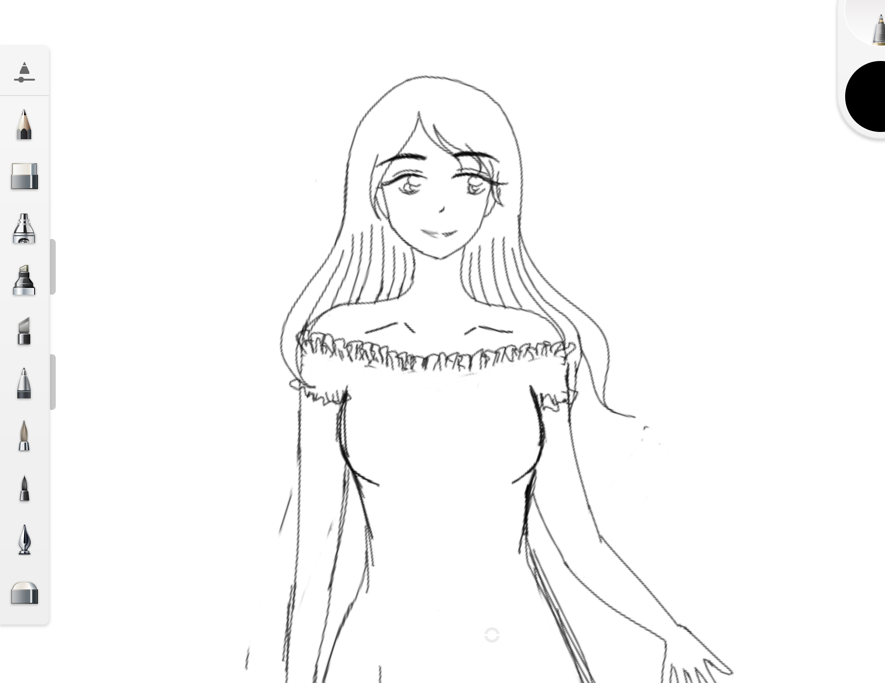
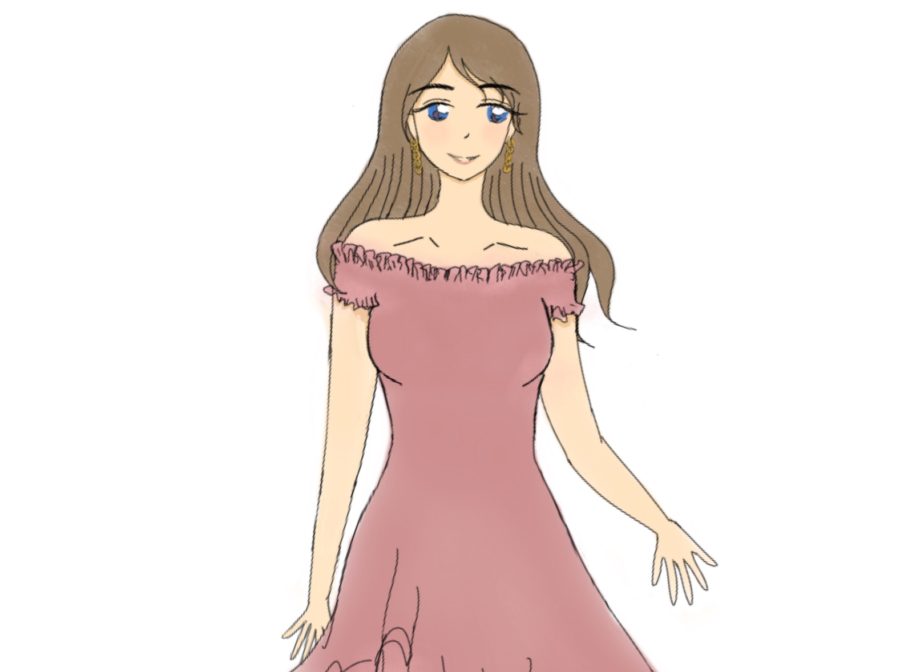
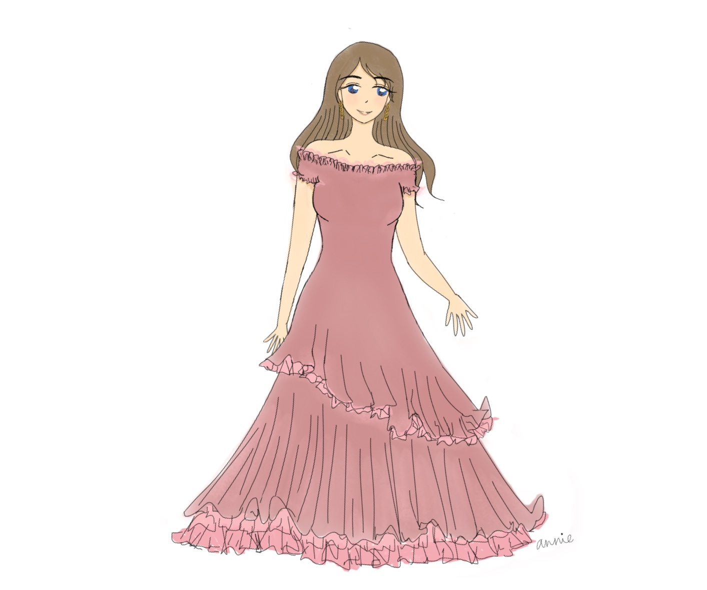
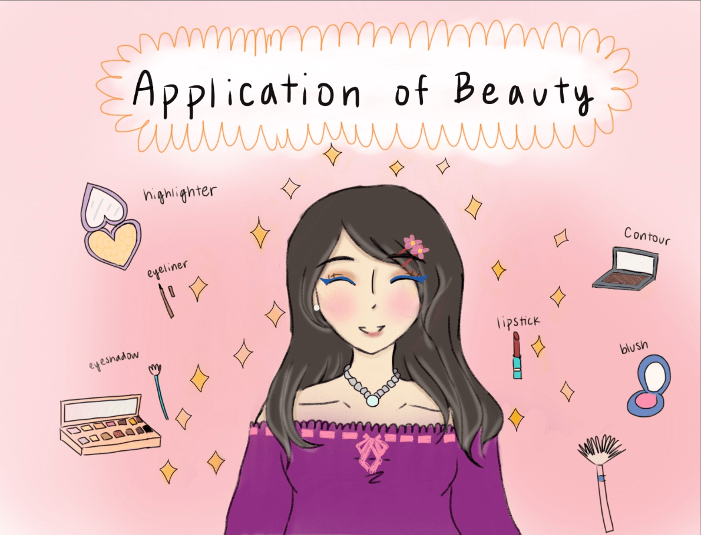
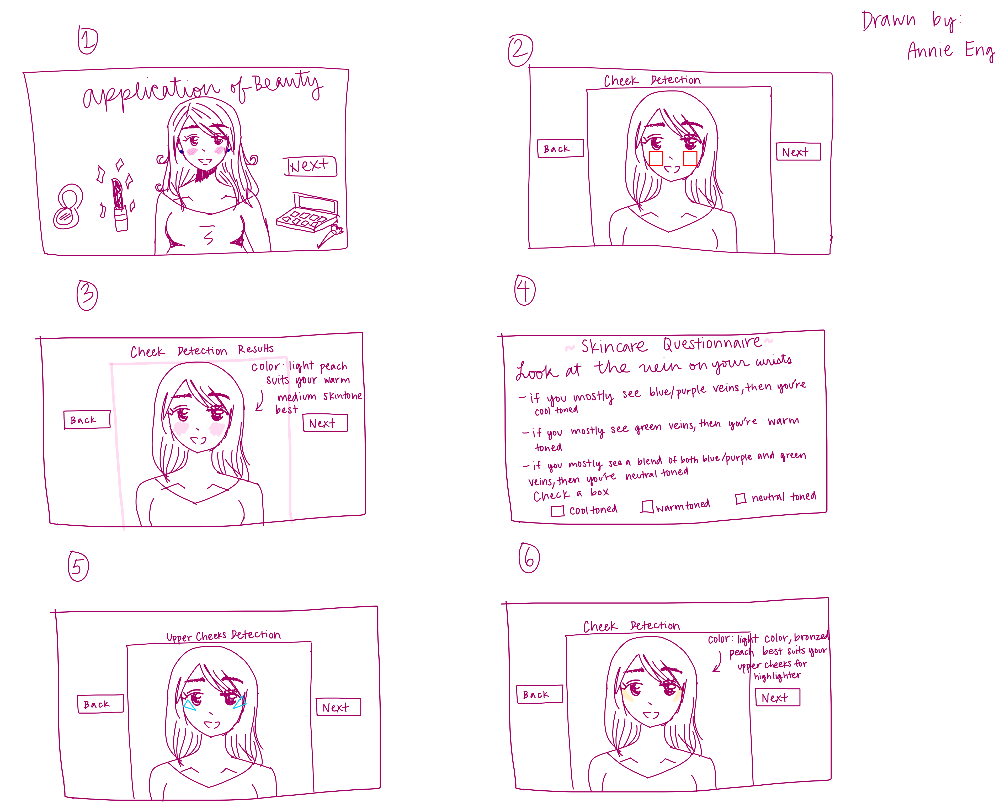
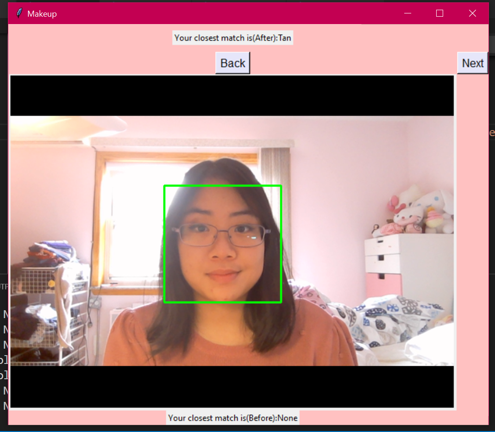
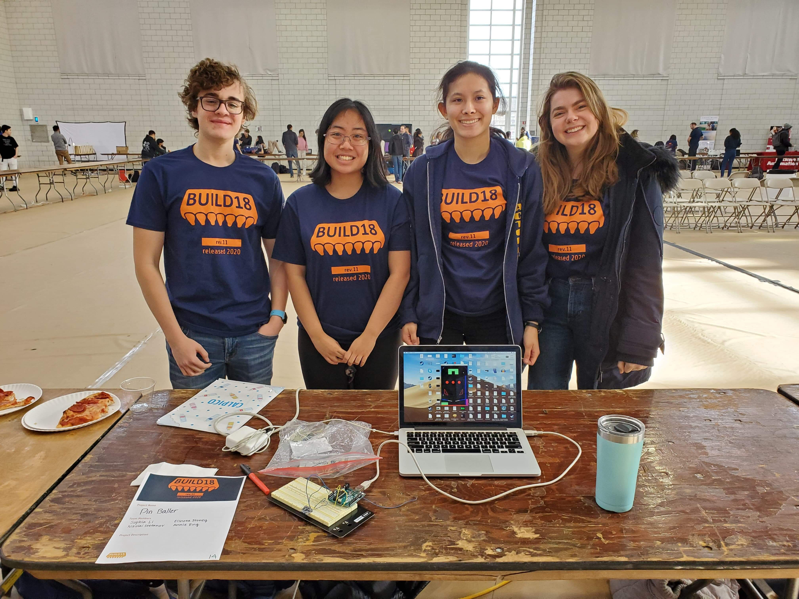
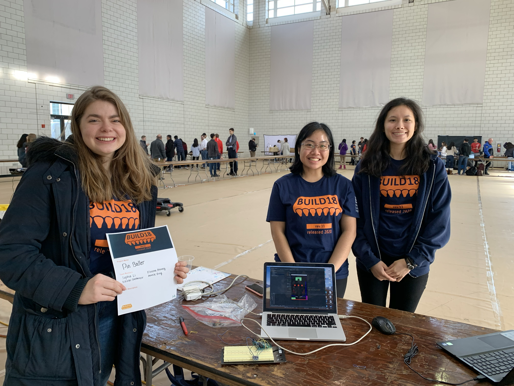

Hi, my name is Annie Eng! I'm a Sophomore at Carnegie Mellon University studying Electrical and Computer Engineering. I have experience with Python and I'm currently learning C in class. I am enthusiastic about learning new things, right now I'm trying to learn a new piece on the piano called Liebstraum - Love dream by Franz Liszt. The satisfaction of finishing a difficult task makes learning fun. There are always ways to challenge yourself positively and that's through learning.
Relevant Coursework: Principles of Imperative Computation (Fall 2020), Structure and Design of Digital Systems (Fall 2020), Matrices and Linear Transformations (Fall 2020), Fundamentals of Programming (Python), Introduction to Electrical and Computer Engineering, Calculus in Three Dimensions, Concepts of Mathematics
I'm passionate about increasing diversity and inclusion for women in STEM. I was one of the only females in my computer science and physics class in high school. That changed with one of my first experiences in STEM by being a research intern at New York University, which solidified my interest in engineering. I loved working with other women in STEM and contributing to an important project to help people. Here's my research I presented at the colloquium.
In my free time, I love to draw anime and go on Reddit to look at memes. I was recently awarded with a scholarship through Girls Who Code to learn from General Assembly's User Experience course to apply what I will learn to create user oriented projects. I'm super excited to start the course and showcase my creative curiousity through the projects I create in the future!
Also ~ here is a progression of a drawing I created that I'm proud of:
  One of the first independent projects I made with some guidance is Application of Beauty. Created using Python and Computer Vision, I wanted my term project in my 15-112 class to showcase something I like: makeup. I created geometric shapes in openCV to display where to apply the beauty product, made dictionaries containing color pigments(gbr) to match different skin tones of users, and created a finite state machine to alternate between makeup features. I added some extra features for the user to modify such as a color opacity scale and created an error prevention button to stop spamming the application.
I also learned how to incorporate feedback from my peers and mentors to enhance the functionality of the game. Here's a link to show how to use the application from beginning to end. I included some photos to show my UI, layout of how I wanted my program to work, and a test run of one of the skin tone features.
  A group project my friends and I made together in our Spring semester of freshman year was called 'Pinballer' for a hardware hackathon called Build18. Since we were freshmen, we tried our best with the limited knowledge we learned from our electrical engineering and programming classes. We had a week to brainstorm and create our idea from the equipment we were provided with. During our brainstorming sessions, we collaborated to see how our unique skills could be used to create a project.
We made a programming pinball game with added physics features. For the hardware aspect, we connected an Arduino board with an accelerometer to detect hand motion so the game can sense movement to move the bumpers on screen. There were some malfunctions with the equipment since they were fragile, but we adapted to what we had and finished on time.
 